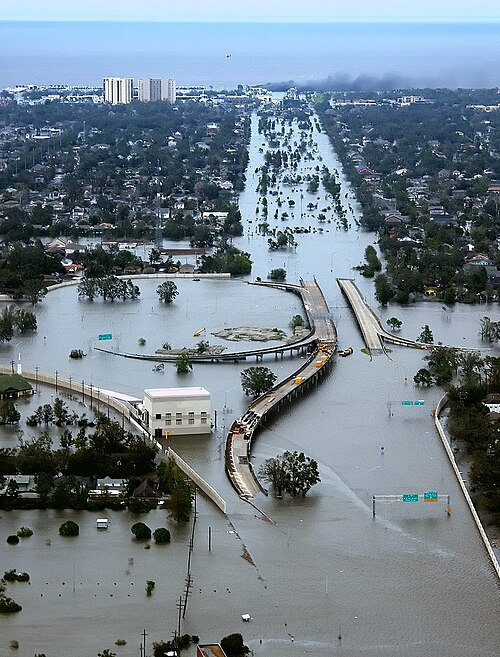
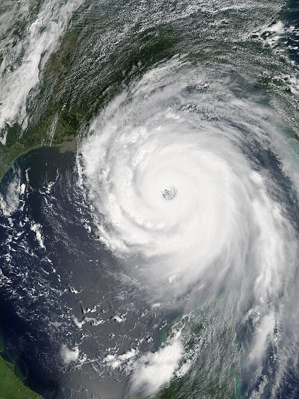

The Storm That Changed the Gulf Coast
In August 2005, Hurricane Katrina struck the Gulf Coast of the United States and became one of the most destructive natural disasters in American history. The hurricane caused catastrophic flooding, especially in New Orleans, Louisiana, where levee failures submerged large portions of the city for weeks.
More than 1,800 people lost their lives. Millions were displaced from their homes. Entire neighborhoods were erased, and infrastructure across Louisiana, Mississippi, and Alabama suffered damage that took years and billions of dollars to begin repairing.
"The storm surge from Katrina was the equivalent of a 20-foot wall of water hitting the coast. Nothing in the region's history had prepared anyone for that scale of destruction."
Key Facts at a Glance
- Landfall Date: August 29, 2005
- Category: Category 5 at peak — Category 3 at landfall
- Deaths: Over 1,800 confirmed fatalities
- Damage: Over $125 billion in economic losses
- Displaced: More than 1 million residents
- Affected states: Louisiana, Mississippi, Alabama, Florida
The Levee Crisis
What transformed a powerful hurricane into an unparalleled urban catastrophe was the failure of the federal levee system protecting New Orleans. Within hours of landfall on August 29th, multiple levee breaches allowed water from Lake Pontchartrain to pour into the city — eventually flooding approximately 80% of New Orleans.

The images of flooded streets, stranded residents on rooftops, and overwhelmed emergency responders became defining visual symbols of the disaster — and of what critics described as catastrophic failures in government preparedness and response at every level.
Scale of Destruction
In Mississippi, the storm surge obliterated entire coastal communities. In Biloxi and Gulfport, the surge reached inland for miles, wiping neighborhoods clean of structures that had stood for over a century. The aerial photographs — stark grids of concrete foundations with nothing standing above them — shocked a nation accustomed to seeing hurricane damage measured in broken windows and roof debris.

Katrina also shone a harsh spotlight on racial and economic inequities in the United States. Those without cars, savings, or social networks — disproportionately Black and low-income residents — faced far greater difficulties evacuating or surviving the storm's aftermath.